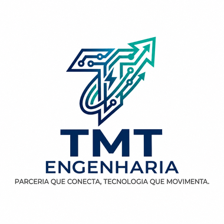
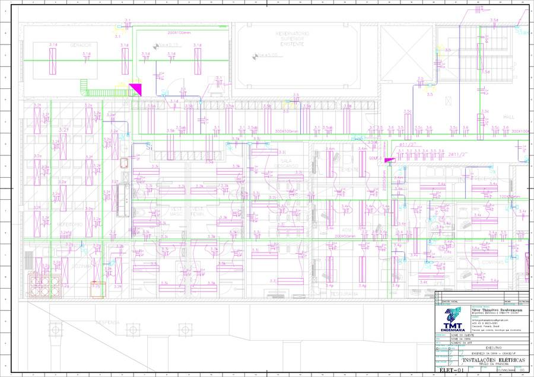
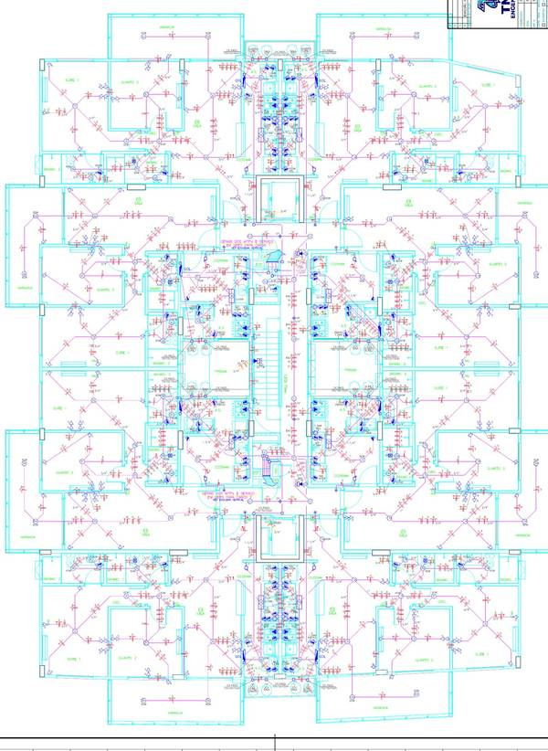
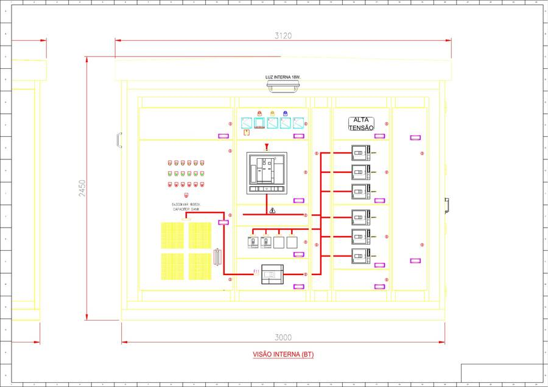
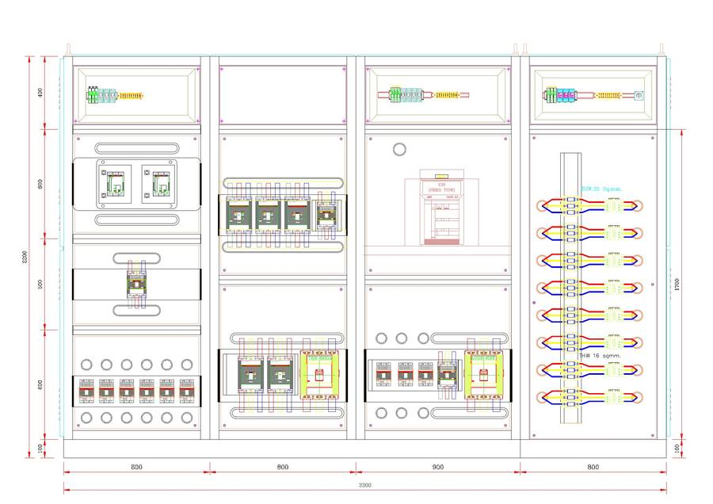
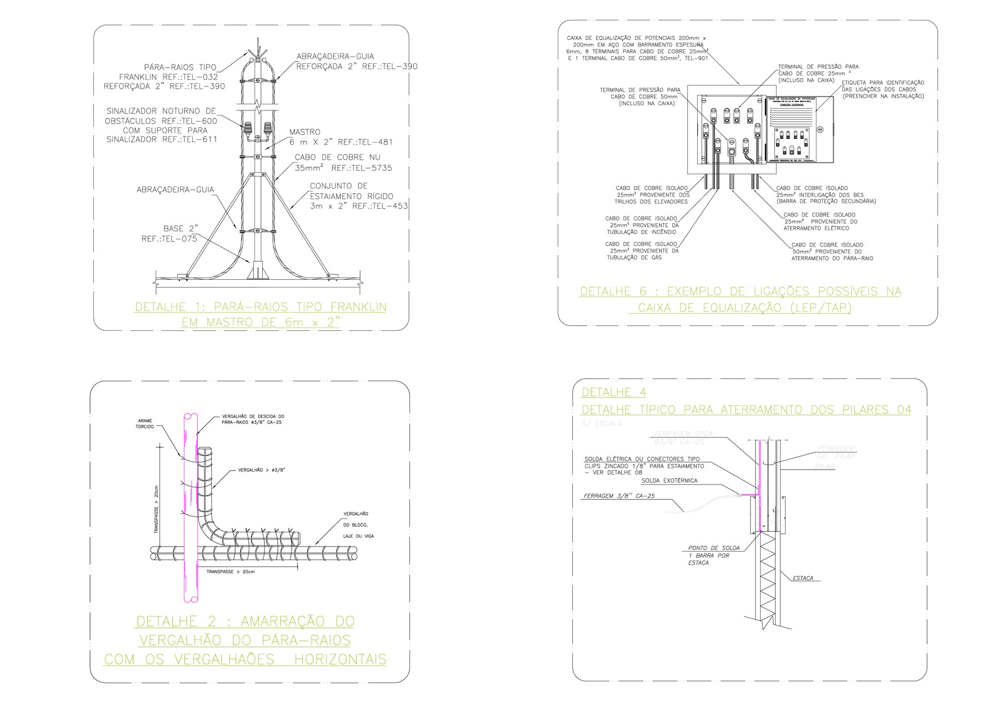

Projetos elétricos, subestações, SPDA, painéis de comando e perícias, com atendimento direto do engenheiro responsável. Sediada em Cascavel/PR e atuando em todo o Brasil.
Solicitar orçamento pelo WhatsApp
Projetos concluídos, além dos cases apresentados neste site.
Atuamos em projeto, perícias e vistorias, cobrindo desde instalações prediais até subestações e painéis de média e baixa tensão.
Uma amostra de trabalhos da TMT. Por respeito à confidencialidade, os clientes não são identificados.
Projeto elétrico completo de edificação comercial, com iluminação, tomadas, distribuição e diagramas de quadros.

Projeto executivo das instalações elétricas de edifício residencial, com unidades autônomas, áreas comuns e esquema vertical.

Projeto de subestação compacta abrigada, com compartimentos de alta tensão, transformador e baixa tensão.

Projeto de painel de comando e potência que reúne centro de controle de motores (CCM) e quadro geral de baixa tensão (QGBT).

Projeto de proteção contra descargas atmosféricas de edifício de 11 pavimentos, com captação, descidas pela estrutura, equipotencialização e prancha de detalhamento.

A TMT Engenharia reúne experiência em projetos elétricos para residências, comércios e indústrias, com obras em diferentes estados do Brasil. Aqui, cada projeto é conduzido do início ao fim pelo próprio engenheiro responsável, sem intermediários: você tem comunicação direta, respostas rápidas e soluções técnicas alinhadas à realidade da sua obra.
Engenheiro Eletrônico
CREA-PR 232367Vitor é o responsável técnico da TMT Engenharia e acompanha pessoalmente cada projeto. Atua em instalações elétricas prediais, elétrica industrial, subestações, SPDA, painéis de comando e potência, automação residencial, perícias, vistorias e consultorias.
Avaliações reais de clientes no Google.
Conte o que você precisa e retornaremos o mais rápido possível. Atendemos todo o Brasil.
WhatsApp(45) 9 8823-9581 Instagram@tmt.engenhariaeletrica E-mailtmtengenhariaeletrica@gmail.comSim. Atuamos em todo o Brasil, com projetos feitos de forma remota e fiscalização conforme a necessidade da obra.
Local da obra, tipo de serviço, planta arquitetônica (se houver) e uma breve descrição. Se ainda não tiver tudo, envie o que tiver e conversamos.
A TMT Engenharia não realiza acompanhamento contínuo ou fiscalização da execução de obras. Nossa atuação nesse segmento concentra-se na elaboração de projetos, vistorias técnicas e perícias de engenharia.
Sim. Projetamos o sistema de proteção contra descargas atmosféricas, com captação, descidas, aterramento e equipotencialização, para edifícios residenciais, comerciais e industriais.
Sim. Realizamos vistorias e perícias em instalações elétricas, com inspeções, análises técnicas e emissão de laudos, conforme a finalidade e o escopo contratado.
Apenas se o cliente autorizar. Preservamos a confidencialidade e mostramos a região e características técnicas dos projetos.